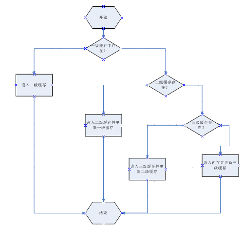
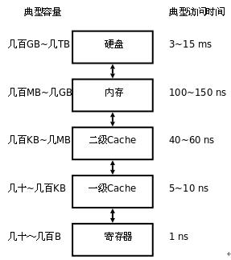

你和同学们找了三道题目用来练习。
这次练习的目标是写出能在时间限制里通过尽量大规模数据的代码。
同学们纷纷写出了优秀的代码。现在，他们向你发起了挑战，他们对每个问题都设置了若干个测试数据，这是他们能通过的最大规模的测试数据。现在，他们想看一看你写的代码究竟能超过多少同学的代码，通过多大规模的测试数据。
本题分为 $3$ 个任务，每个任务对应一道题和相应的若干个测试点，你需要对于每个任务，设计一个能通过尽量多测试点的程序。
给定 $n$ 个 $32$ 位无符号整数，将它们从小到大排序。
有 $2n$ 个人在玩「石头剪刀布」游戏。他们排成两排，每排 $n$ 个人。每个人在每一局游戏都使用固定策略，即对于第 $i$ ($i \in \left\{ 1, 2 \right\}$) 排的第 $j$ ($0 \leq j < n$) 个人，用一个整数 $a_{ij}$ 表示他的策略，其中 $0$ 表示只出石头，$1$ 表示只出剪刀，$2$ 表示只出布。
现在有 $q$ 个询问，每个询问给定三个整数 $x, y, l$ ($0 \leq x, y < n, 1 \leq l \leq n - \max \left\{ x, y \right\}$)，问将第一排的第 $x \sim x + l − 1$ 个人和第二排的第 $y \sim y + l − 1$ 个人比赛之后，第一排有多少个人会赢。
上文中「比赛」的意思是，对于所有整数 $i$ 满足 $0 \leq i < l$，让第一排的第 $x + i$ 个人和第二排的第 $y + i$ 个人进行「石头剪刀布」游戏。
我们称一个合法的括号串为：只由左括号和右括号构成，两种括号的数量相等，且任意一个前缀的左括号数量不少于右括号数量的串。
现在给定一个由 (，) 和 ? 构成的串，问有多少种不同的方案，使得将每个 ? 都替换成一个括号之后，该串变成一个合法的括号串。两种方案不同，当且仅当至少有一个位置的 ? 被替换成了不同的括号。
第一行一个正整数 $\textrm{task_id}$ ($1 \leq \textrm{task_id} \leq 3$)，表示任务编号。接下来是每个具体任务的输入内容。
在输入的同一行中，相邻的两个整数会被一个空格隔开。
对于任务一：共一行，包含两个正整数 $n, s$ ($n \leq 2 \times 10^8$)。令 $a_0 = \operatorname{next\_integer}(s), a_i = \operatorname{next\_integer}(a_{i - 1}), 1 \leq i < n$，则 $a_0, a_1, \cdots, a_{n - 1}$ 即为需要排序的 $n$ 个整数。
对于任务二：第一行包含两个正整数 $n, q$ ($n, q \leq 3 \times 10^5$)。
第二行一个仅包含 $\texttt 0, \texttt 1, \texttt 2$ 的长度为 $n$ 的字符串，第 $i$ 个字符所代表的整数表示第一排第 $i$ 个人的策略 (即 $a_{1i}$)。第三行格式同第二行，表示第二排各个人的策略。
接下来的 $q$ 行，每行三个整数 $x, y, l$，描述一组询问。
对于任务三：第一行一个正整数 $n$ ($n \leq 266\,666$)，表示给定的串的长度。第二行一个字符串，即为给定的串。
对于任务一：令 $b$ 为已经排好序的数组，调用 output_arr(b, n * 4) 即可。
对于任务二：将每个询问的答案依次存入 $32$ 位无符号整数数组 $b$ 中 (即存入 $b_0, b_1, \cdots, b_{q-1}$ 中)，然后调用 output_arr(b, q * 4) 即可。
对于任务三：输出一行一个整数，表示不同的方案数除以 $2^{32}$ 得到的余数。
任务一：$2 \times 10^8$ 的排序？$O \left( n \log n \right)$ 已经凉透啦！
那怎么办呢？使用基数排序！设选择的基数为 $B$，则时间复杂度为 $O \left( \left( n + B \right) \log_B n \right)$ 的！
看起来貌似是 $B$ 越大越好，因为排序所需的次数 $\log_B n$ 比较少。然而实际上真的是这样吗？
如果你做过实际测试，你应该可以发现，$B = 256$ 时的速度远大于 $B = 65536$ 的速度。
这涉及到第一个计算机原理——计算机的三段缓存结构。
众所周知，CPU 存取硬盘的速度非常慢，于是发明了内存。不过存取内存的速度还是很慢，于是就发明了存取很快的寄存器。
然鹅寄存器太贵了，为了作一个 "中介"，就发明了缓存 (缓冲存储器)。为了时间和空间的权衡，最终人类决定使用三段缓存结构，分别称为一级缓存 (L1-Cache)、二级缓存 (L2-Cache) 以及三级缓存 (L3-Cache)。
三段缓存与内存、CPU 之间的联系 (工作原理) 如下图：
它们的存取速度及容量如下图 (大约)：
注意到一级缓存只有几十 KB (通常为 $16 \,\mathrm K, 32 \,\mathrm K, 64 \,\mathrm K$，较好的计算机可能有 $256 \,\mathrm K$ 左右。
因此，如果 $B = 65536$，则排序中我们需要使用一个长度为 $65536$ 的整型 (int[]) 数组 buffer 来存储每个数出现的次数，它需要耗费约 $256 \,\mathrm{KB}$ 的内存，因此无法卡进一级缓存，需要时不时地在一级缓存和二级缓存之间切换。
然而 $B = 256$ 时，buffer 的内存只有 $1 \,\mathrm {KB}$，可以卡进任何一台计算机的一级缓存，因此就省下了切换的时间。
在算法层面上，$B = 256$ 时的耗时约为 $B = 65536$ 时的耗时的 $2$ 倍，然而根据上表可以得知，访问二级缓存的时间是访问一级缓存的时间的 $6 \sim 8$ 倍！在这个层面上，前面的因子 $2$ 已经算不上什么了。
因此这个任务的正解就是做 $B = 256$ 的基数排序，即按照 "字节" 分组做四次计数排序。
时间复杂度？不重要了。
任务二：剪刀石头布统计。
首先，我们把第二排的人所对应的数 $a_{2, j}$ 做一个转化，令 $a'_{2, j} \equiv a_{2, j} - 1 \pmod 3$。
这样问题就转化成了：给定两个 $\texttt 0/\texttt 1/\texttt 2$ 串，每次询问两个串的等长子串中，有多少个位置是相同的。
线段树？并不能维护。分块？TLE 了！FFT？……
对，就是考虑暴力！裸暴力是 $O \left( n q \right)$ 的，该怎么优化呢？
首先，如果给定的是 $\texttt 0/\texttt 1$ 串，那么就可以用 std::bitset 优化了。但是这题中给的好像是 $\texttt 0/\texttt 1/\texttt 2$ 串啊！
没关系！我们把它扩充成 $\texttt 0/\texttt 1$ 串！对于一个 $0$，我们将其看成 $\texttt{100}$，$1$ 看成 $\texttt{01}$，$2$ 看成 $\texttt{001}$。
于是问题就变成了：给定两个 $\texttt 0/\texttt 1$ 串，求它们的等长子串中，有多少个相同位置的公共 $1$。
对，使用 bitset 优化！每 $64$ 个压成一位，然后求区间的按位与的种群计数 (__builtin_popcountll)！
时间复杂度为 $\dfrac {3 n q} {64}$！还是 TLE 怎么办？
手写 bitset！循环展开！
使用 $8$ 重的循环展开，时间复杂度变为 $\dfrac {3 n q} {512}$！
然后你就卡过去了！
任务三：括号序列计数。
容易想到一个 $O \left( n^2 \right)$ 的朴素 DP：
用 $f_{i, j}$ 表示考虑括号序列的前 $i$ 位，这 $i$ 位的和 (即前缀和，( 看作 $+1$，) 看作 $-1$ 后求和) 为 $j$ 的方案数。
显然有边界 $f_{0, 0} = 1$，答案为 $f_{n, 0}$。
考虑转移，对于一个 (，令 $f_{i, j} = f_{i-1, j-1}$ ($j > 0$)。
对于一个 )，令 $f_{i, j} = f_{i-1, j+1}$ ($j \geq 0$)。
对于一个 ?，令 $f_{i, j} = \left[ j > 0 \right] \cdot f_{i-1, j-1} + f_{i-1, j+1}$ ($j \geq 0$)。
这样显然要 TLE 飞了，需要进行底层优化。
显然第一维可以滚动掉。其次，对于 ( 和 )，没有实质性的变换，只是一个数组的平移而已。我们直接平移数组头指针即可。(记得平移完毕后把 $f_{-1}$ 置为 $0$)
而对于 ?，看起来是有实质性的变化的。怎么办呢？
先来一波循环展开，常数除以若干。
其次发现，对于给定的 $i$，只有 $0 \leq j \leq \min \left\{ i, (n - i) \right\}$ 是有用的，常数除以 $2$。
然后发现，对于给定的 $i$，只有满足 $j \equiv i \pmod 2$ 的 $j$ 才有可能有用，常数再除以 $2$。
于是你就过了。没错，就是 $O \left( n^2 \right)$ 过 $266\,666$ 的快感。
#pragma GCC optimize("Ofast")
#pragma GCC optimize("unroll-loops")
#pragma GCC target("sse,sse2,sse3,ssse3,sse4,popcnt,abm,mmx,avx,tune=native")
#include <cstdio>
typedef unsigned char u8;
typedef unsigned short u16;
typedef unsigned int u32;
typedef unsigned long long u64;
inline u32 next_integer(u32 x) {
x ^= x << 13;
x ^= x >> 17;
x ^= x << 5;
return x;
}
void output_arr(u32 *A, u32 size) {
u32 ret = size * 4, x = 23333333;
for (u32 i = 0; i < size; ++i) ret = ret ^ (A[i] + x), x = next_integer(x);
printf("%u\n", ret);
}
namespace Sorting {
const int N = 200000000;
#define crazy_sort(a, b, id) for (i0 = n - 1, i1 = n - 2, i2 = n - 3, i3 = n - 4, i4 = n - 5, i5 = n - 6, i6 = n - 7, i7 = n - 8; ~i0; ) { \
b[--S##id[ ((u8*)(a + i0))[id] ]] = a[i0], i0 -= 8; \
b[--S##id[ ((u8*)(a + i1))[id] ]] = a[i1], i1 -= 8; \
b[--S##id[ ((u8*)(a + i2))[id] ]] = a[i2], i2 -= 8; \
b[--S##id[ ((u8*)(a + i3))[id] ]] = a[i3], i3 -= 8; \
b[--S##id[ ((u8*)(a + i4))[id] ]] = a[i4], i4 -= 8; \
b[--S##id[ ((u8*)(a + i5))[id] ]] = a[i5], i5 -= 8; \
b[--S##id[ ((u8*)(a + i6))[id] ]] = a[i6], i6 -= 8; \
b[--S##id[ ((u8*)(a + i7))[id] ]] = a[i7], i7 -= 8; \
}
u32 a[N], b[N], S0[256], S1[256], S2[256], S3[256];
void main() {
u32 n, seed, i, i0, i1, i2, i3, i4, i5, i6, i7; u8 *p = (u8*)&seed;
scanf("%d%u", &n, &seed);
for (i = 0; i < n; ++i) a[i] = seed = next_integer(seed), ++S0[*p], ++S1[p[1]], ++S2[p[2]], ++S3[p[3]];
for (i = 1; i < 256; ++i) S0[i] += S0[i - 1], S1[i] += S1[i - 1], S2[i] += S2[i - 1], S3[i] += S3[i - 1];
crazy_sort(a, b, 0);
crazy_sort(b, a, 1);
crazy_sort(a, b, 2);
crazy_sort(b, a, 3);
output_arr(a, n);
}
}
namespace Game {
#define popc __builtin_popcountll
const int N = 300054;
typedef u64 bitset[N * 3 >> 4], *pbitset;
int n, q;
char A[N], B[N];
u32 ans[N];
bitset a[64], b[64];
inline int max(const int x, const int y) {return x < y ? y : x;}
inline void set(pbitset bit, int id) {bit[id >> 6] |= 1ull << (id & 63);}
void main() {
int i, j, x, y, len, blk, B8;
u32 S0, S1, S2, S3, S4, S5, S6, S7;
pbitset l0, l1, l2, l3, l4, l5, l6, l7;
pbitset r0, r1, r2, r3, r4, r5, r6, r7;
scanf("%d%d%s%s", &n, &q, A, B);
for (len = i = 0; i < n; ++i, len += 3) {
x = len + (A[i] & 3), y = len + ((B[i] - 1) & 3) - (B[i] == 48);
for (j = max(x - 63, 0); j <= x; ++j) set(a[x - j], j);
for (j = max(y - 63, 0); j <= y; ++j) set(b[y - j], j);
}
for (i = 0; i < q; ++i) {
scanf("%d%d%d", &x, &y, &len), x *= 3, y *= 3, len *= 3, blk = len >> 6;
l0 = a[x & 63] + (x >> 6), l1 = l0 + 1, l2 = l0 + 2, l3 = l0 + 3, l4 = l0 + 4, l5 = l0 + 5, l6 = l0 + 6, l7 = l0 + 7;
r0 = b[y & 63] + (y >> 6), r1 = r0 + 1, r2 = r0 + 2, r3 = r0 + 3, r4 = r0 + 4, r5 = r0 + 5, r6 = r0 + 6, r7 = r0 + 7;
S0 = S1 = S2 = S3 = S4 = S5 = S6 = S7 = 0;
for (B8 = blk >> 3; B8; --B8) {
S0 += popc(*l0 & *r0), l0 += 8, r0 += 8;
S1 += popc(*l1 & *r1), l1 += 8, r1 += 8;
S2 += popc(*l2 & *r2), l2 += 8, r2 += 8;
S3 += popc(*l3 & *r3), l3 += 8, r3 += 8;
S4 += popc(*l4 & *r4), l4 += 8, r4 += 8;
S5 += popc(*l5 & *r5), l5 += 8, r5 += 8;
S6 += popc(*l6 & *r6), l6 += 8, r6 += 8;
S7 += popc(*l7 & *r7), l7 += 8, r7 += 8;
}
ans[i] = S0 + S1 + S2 + S3 + S4 + S5 + S6 + S7;
for (j = blk & 7; j; --j) ans[i] += popc(*l0++ & *r0++);
ans[i] += popc(*l0 & *r0 & ~(-1ull << (len & 63)));
}
output_arr(ans, q);
}
}
namespace Parentheses {
const int N = 266690;
char s[N];
int n;
u32 dp[N * 2];
inline int min(const int x, const int y) {return x < y ? x : y;}
void main() {
int i; u32 *f = dp + N, *f0, *f1, *f2, *f3, *f4, *f5, *f6, *f7, *limit;
scanf("%d%s", &n, s), *f = 1;
if (n & 1) {putchar(48), putchar(10); return;}
for (i = 0; i < n; f[-1] = 0, ++i)
switch (s[i]) {
case 40: --f; break;
case 41: ++f; break;
case 63:
f0 = f + !(i & 1), f1 = f0 + 2, f2 = f0 + 4, f3 = f0 + 6, f4 = f0 + 8, f5 = f0 + 10, f6 = f0 + 12, f7 = f0 + 14;
for (limit = f + min(i + 1, n - i - 1); f7 <= limit; ) {
*f0 = f0[-1] + f0[1], f0 += 16;
*f1 = f1[-1] + f1[1], f1 += 16;
*f2 = f2[-1] + f2[1], f2 += 16;
*f3 = f3[-1] + f3[1], f3 += 16;
*f4 = f4[-1] + f4[1], f4 += 16;
*f5 = f5[-1] + f5[1], f5 += 16;
*f6 = f6[-1] + f6[1], f6 += 16;
*f7 = f7[-1] + f7[1], f7 += 16;
}
for (; f0 <= limit; f0 += 2) *f0 = f0[-1] + f0[1];
break;
}
printf("%u\n", *f);
}
}
int main() {
int T;
switch (scanf("%d", &T), T) {
case 1: Sorting::main(); return 0;
case 2: Game::main(); return 0;
case 3: Parentheses::main(); return 0;
}
return 1;
}
坑1：任务三中，平移数组头指针的时候要将 $f_{-1} \gets 0$。
坑2：注意循环展开的写法，尽量不要用重复的变量，充分刺激 CPU 并发。